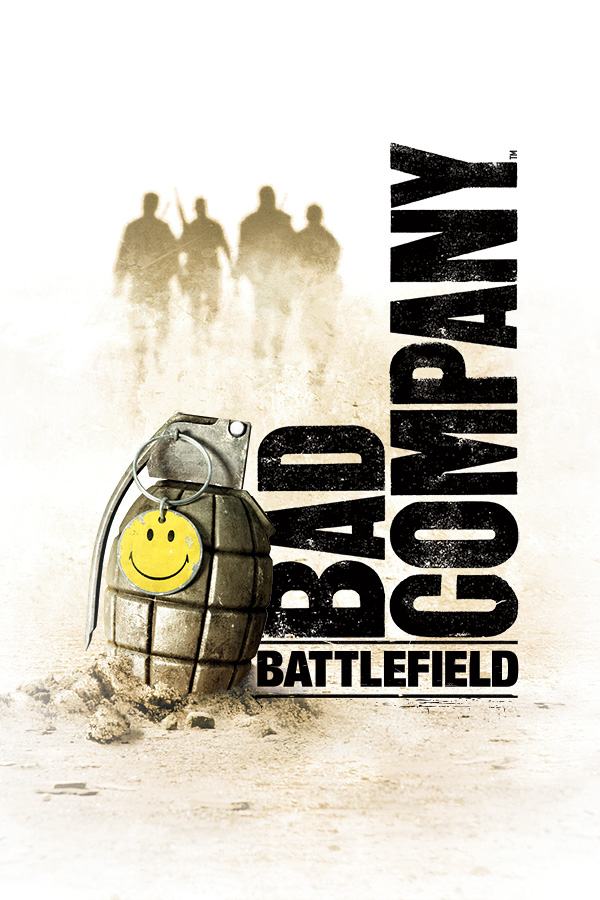

|  | |
| Playtime | Not Played |
| Last Activity | Never |
| Added | 5/7/2025 0:49:23 |
| Modified | 5/7/2025 0:52:56 |
| Completion Status | Not Played |
| Library | Playnite |
| Source | Steam |
| Platform | $PC (Windows) |
| Release Date | 3/2/2010 |
| Community Score | 92 |
| Critic Score | 90 |
| User Score | |
| Genre | Action FPS |
| Developer | Coldwood Interactive DICE |
| Publisher | Electronic Arts |
| Feature | Controller Support Multiplayer Single Player |
| Links | PCGamingWiki Official site HowLongToBeat IGDB SteamDB StrategyWiki MobyGames Wikipedia WSGF |
| Tag | Action Adventure Atmospheric Classic Combat Comedy Co-op Destruction Fighting First-Person FPS Military Multiplayer Open World Shooter Singleplayer Tactical Team-Based Vehicular Combat War |
Battlefield: Bad Company 2 is a 2010 first-person shooter game developed by DICE and published by Electronic Arts for Microsoft Windows, PlayStation 3, Xbox 360, iOS, Android and Kindle Fire systems. It is a direct sequel to Battlefield: Bad Company and is part of the Battlefield game series. It was released worldwide in March 2010. The iOS port was released on the App Store on December 16, 2010. The Android and Kindle Fire versions were released in June 2012.
The game is primarily a squad-level first-person shooter based in a contemporary modern warfare setting. Additionally, the game includes a single-player campaign, where the player re-assumes the role of Preston Marlowe, the protagonist of the original game, and his squad as they attempt to stop a Russian super-weapon. The game's Frostbite 1.5 engine allows for destructible environments. Multiplayer maps, which allow for five different game modes, contain a wide selection of vehicles, aircraft and emplacements.
The game was met with positive reception from critics, garnering a mean of 88 from aggregator Metacritic for the Xbox 360 and PS3 versions, and 87 for the PC version. It became a commercial success, selling more than twelve million units since its initial release. Seven VIP map packs, as well as a downloadable game mode, were added after launch; an expansion pack, Battlefield: Bad Company 2: Vietnam (centered on the Vietnam War), released on December 21, 2010. A standalone sequel, Battlefield 3, was released in October 2011.
While Bad Company 2 is primarily a first-person shooter, it follows other games in the series by allowing the player to control certain vehicles, including ATVs, APCs, tanks, and helicopters. On foot, players are given access to a variety of real-world small arms such as assault rifles and machine guns. Players can also jump, crouch, and sprint. They can carry one primary weapon and a pistol in multiplayer, or two primary weapons in single-player, as well as grenades and other equipment. Players can fire "from the hip", but zooming in and using iron sights, reflex sights, or telescopic sights (depending on the weapon) will provide much better accuracy when shooting.
Bad Company 2 heavily emphasizes destructible environments. Large sections of most buildings can be destroyed by explosives, and some walls and fences break down under barrages of bullets, with the game's physics engine realistically simulating the destruction.
The game utilizes a "regenerating health" system, rather than giving players health points as older games in the Battlefield series have done. To accommodate this in multiplayer, the "Medic" equipment now accelerates health regeneration rather than directly restoring the player's health. If the player is wounded, they must take cover and avoid damage in order to regain health. A heavily wounded player will see dirt and blood around the edges of the screen, as an illustration of injury.
Bad Company 2 features a story-driven single-player campaign. For most of the narrative, the player takes control of Preston Marlowe, one of the members of the titular "Bad Company". The exception to this is the first mission, which is set prior to the rest of the campaign. Each mission is divided into a series of objectives, often interspersed with cutscenes which simulate the style of war films. While the other members of Bad Company will engage in combat, the game relies upon the player to complete the objectives and kill most of the enemies. Although the player's computer-controlled allies can never die, they cannot carry out objectives. Aside from infantry combat, the campaign contains several missions in which the player controls a vehicle, or mans a weapon turret while a teammate controls the vehicle.
Each weapon in the campaign is considered a collectible - the first time the player picks up that type of weapon, a "Collectable Unlocked" message appears. There are also sensor stations throughout the campaign which the player can find and destroy - this is also recorded in the campaign stats. "Supply Drop" crates are scattered throughout the missions, where the player can exchange weapons and replenish ammo. The Supply Drop crates will remember any weapon the player picks up and this weapon will then be available for the rest of the campaign.
Multiplayer is class-based, with four classes: Assault, Engineer, Medic, and Recon. Each class has a variety of unique weapons and equipment, and serves a specific role in combat. There are also some weapons that can be used by any class, such as pistols and shotguns. Each class gains experience and levels up separately.
New items are unlocked by earning experience points, which are gained for performing actions conducive to the goals of the player's team, such as eliminating enemy players, healing teammates, or capturing or defending points of interest. These points count towards a total of 50 ranks. Bonuses to the base number of points can be awarded under certain circumstances (such as eliminating an enemy by means of a headshot).
Multiplayer mode features 15 vehicles, including new additions, such as the Sikorsky UH-60 Black Hawk, a quad bike, a four-man patrol boat, a personal watercraft, a ZU-23-2 mounted on a BMD-3 armoured personnel carrier, and a Northrop Grumman MQ-8 Fire Scout, controlled via remote computer terminals. The available maps are set in various environments such as South America and Alaska, near the borders of Russia, similar to those seen in the single-player.
A dog tag system, as seen in Battlefield 2142 and Battlefield: Bad Company, is also used, awarding players with their opponents' dog tags when they defeat them with a knife attack. Players can use party chat for each game mode. The game uses the PunkBuster anti-cheat program to protect from cheaters in online multiplayer matches.
Bad Company 2 features several game types:
Conquest: Features the classic gameplay of the Battlefield series. Players must capture and defend flags for as long as possible. If a base is taken, it can be recaptured, and the cycle can repeat until the game's end. Every kill depletes one ticket, and tickets gradually decrease when one team controls more than half of the flags on the map. Vehicles can spawn once a flag is captured. When one team's tickets are depleted, that team will lose the game. Lost tickets can be regained by reviving fallen teammates.
Onslaught: Tasks one squad of up to four players to capture certain points on the map, allowing the squad to advance. The game is won by capturing all the points. Unlike other modes, the only enemies are bots. This game mode features new lighting and time of day on existing maps, as well as new vehicles. It is available for Xbox 360 and PS3 only; a PC version was planned, but was cancelled.
Rush: Players must defend or destroy pairs of M-COM stations until either the attackers run out of respawn tickets or all of the stations are destroyed. Lost tickets can be regained by reviving fallen teammates. An M-COM station can be destroyed by planting a charge, using explosive weapons or ballistics, or simply by demolishing the building in which it is located. However, not all M-COM stations exist in destructible buildings, forcing players to use a variety of methods to achieve the same goal. When a charge is planted by the attacking team, an alarm is activated and the defenders have a limited amount of time to get to the M-COM station and disarm the bomb before it detonates.
Squad Deathmatch: Features up to four squads, each fighting against the other. An infantry support vehicle is available for any squad to claim, giving a significant advantage. The first squad to score fifty kills wins the match.
Squad Rush: Similar to Rush, but consists of only two squads, one defending and the other attacking. The maps used for Squad Rush are smaller versions of those for both Conquest and Rush modes. There are only 2 M-COM stations in each round.
Bad Company 2 is set in the near future during the fictional Second Russo-American War between the United States and Russian Federation, the latter supporting the fictional Latin American Militia, a rebel group operating in South America.
The game begins in October 1944, as a group of U.S. commandos infiltrate an Imperial Japanese Naval Landing Forces-controlled island in the Sea of Japan as part of "Operation Aurora." They secure a Japanese scientist who was working on a secret scalar weapon and escape the island on a submarine. However, as foreshadowed by the scientist's warnings, the commandos witness the weapon firing and subsequently perish from the resulting tsunami, sparking a myth within the U.S. Army.
In the present, Russia has invaded Europe and Alaska while supporting China's fight in Asia and arming a South American militia. Privates Preston Marlowe, Terrence Sweetwater, George Haggard, and Sergeant Samuel Redford are fighting in Russia in an attempt to secure a top-secret device, a scalar weapon. Despite evading Russian soldiers and completing the mission successfully, the device is discovered to be a fake. Impressed with their previous activities, Army General Braidwood has the squad transferred into the Special Activities Division and assigns them a new mission: to contact Agent James Wyatt (called Aguire in-game), much to the disappointment of Redford, who had hoped to retire after the previous mission.
The squad travels to Bolivia in search of the agent, and after many firefights, they eventually save Aguire. He sends them to retrieve his scalar technology intelligence from a French weather satellite that can be controlled from a base in the Andes. Sweetwater lands the satellite, and the squad successfully thwarts a Russian attempt to destroy it. Marlowe locates the data server and proceeds to descend the mountain during a blizzard while dodging Russian patrols. He survives and is extracted by the others.
During extraction, Aguire briefs the squad about the man responsible for rebuilding scalar weaponry, Arkady Kirilenko, a Russian Army colonel the team encountered in Russia. Kirilenko is hoping to use scalar weaponry to disable America's power grid and pave the way for a Russian invasion. He is believed to be hiding in Chile. The squad heads there, aided by U.S. forces, and finds Kirilenko, who escapes again. Left with only Kirilenko's papers, Sweetwater discovers a shipping manifest for an abandoned ship called the Sangre Del Toro. Aided by the rest of the squad, Marlowe finds the ship and retrieves a compound essential to the use of the weapon while also discovering the truth behind Operation Aurora - the U.S. military knew it was a suicide mission, and the operation was planned to learn more about the weapon's capabilities.
While attempting to meet Aguire in Ecuador, the squad's helicopter is shot down, and they are separated. Along with their helicopter pilot, Flynn (Eric Loren), they regroup and escape the local militia. Redford gives Aguire the compound before discovering that Aguire has double-crossed them by allying himself with Kirilenko. Aguire reveals that he wants revenge against the United States for what happened to his father, Thomas Wyatt (one of the commandos killed in 1944 during Operation Aurora). Despite this, Kirilenko betrays Aguire and kills him, taking the scalar weapon with him. Before he can kill the squad, however, Flynn intervenes and saves them at the cost of his own life.
While the squad is mourning Flynn, they hear Kirilenko talking through a guard's radio. Marlowe knifes the guard, and the squad proceeds toward the city of Quito. Here, after battling squads of South American and Russian troops, they find a large An-124 cargo aircraft that is believed to house the scalar weapon. This is confirmed as a powerful electromagnetic pulse is suddenly released, disabling all electronic equipment in the city except the aircraft. Haggard and Sweetwater become disheartened, with Haggard going so far as suggesting the squad abort the mission. Angry at his allies for giving up, Marlowe is about to continue the mission alone before Redford stops him and then convinces the rest to continue. They then infiltrate the aircraft as it takes off. After a firefight to reach the cockpit, they find it empty. They return to the cargo bay to find Kirilenko attempting to fire the scalar weapon again, this time high over the southern United States. With the help of explosives from the plane's armory, they access and destroy the scalar weapon.
The explosion sends the aircraft plummeting, forcing the squad to bail out, but Kirilenko grabs the last parachute before Marlowe. In free fall, Marlowe kills Kirilenko and is then saved by Sweetwater, who hands Marlowe the parachute that Kirilenko stole. The squad lands in Texas, Haggard's home state. Shortly after, General Braidwood arrives to inform them that they are to aid the U.S. Army against an incoming Russian invasion that is coming through Alaska, much to the squad's disappointment.
The game was first announced in February 2009. On October 19, game developer DICE posted a Twitter announcement stating the game will have dedicated server support. This was in response to Infinity Ward's announcement on October 17 that Call of Duty: Modern Warfare 2 would not support dedicated servers. A PS3 version of the beta began development on November 19, while the PC version was pushed back until February 2010 because of difficulties with PC varieties.
The online multiplayer demo for the Xbox 360 and the closed beta for the PC were released on January 28, 2010, and servers ran until February 25. The demo was released on the PS3 on February 4, 2010, in Europe and North America and February 11, 2010, in Asia. The PS3 beta featured the map "Arica Harbor", while the PC beta, Xbox 360 demo, and PS3 demo featured the map "Port Valdez".
During an interview with GameZone's Dakota Grabowski in March 2010, Senior Producer Patrick Bach revealed that following the negative feedback from PC gamers after the first Battlefield: Bad Company was not released on the PC, Electronic Arts and DICE had a separate dedicated team working on the PC version of Bad Company 2. Bach stated "We see it as very, very hardcore and important part of our customers. So we put a lot of effort into making sure that everything worked perfect." Bach also commented on the use of peripherals such as a mouse and keyboard on consoles, saying "I don't think that we have any special connections to peripherals to the consoles [...] The biggest problem with peripherals for consoles is that the console itself is a level playground. It's even and you know the consumer has the same technology and have the same peripherals and same controls – which makes it easier for us to create a game that feels fair. By catering to a mouse and keyboard for the consoles, it would maybe skew the even playground."
The PC version of the game was co-developed with fellow Swedish developer Coldwood Interactive.
On March 21, 2023, it was announced that the game would be delisted from digital storefronts on April 28, along with its predecessor and Battlefield 1943. The servers were shut down on the 8th of December 2023
The game uses Dolby Digital and Frostbite's High Definition Audio Range technology. The score was composed by Mikael Karlsson and is featured on the Battlefield: Bad Company 2 Official Soundtrack, which was released on February 2, 2010.
As a pre-order promotion, EA offered the "Limited Edition" of Bad Company 2 at normal pricing. By pre-ordering the Limited Edition, buyers of the PC version were given early access to the closed beta from January 28 to February 25. Owners of the Limited Edition on all systems were also given early access to numerous weapons and vehicle perks, which included the M1A1 Thompson and an M1911 pistol, as well as four vehicle perks.
In addition to the six upgrades offered by EA on all pre-orders of the Limited Edition, select retailers offered their own incentives. Copies pre-ordered at GameStop, for example, came with an additional code, unlocking the AKS-74U carbine and giving access to the Squad Rush game mode 30 days early (North America only). All six Limited Edition upgrades, as well as the AKS-74U, are also available to owners of the Standard Edition of the game, but they must be acquired by accumulating points in-game.
The "Ultimate Edition" was released on August 31, 2010, for the Xbox 360 and PlayStation 3. The package includes Battlefield: Bad Company 2, Battlefield 1943, "Onslaught" mode, and immediate access to four vehicle upgrades and two weapon unlocks from purchase, a bonus originally included only in the Limited Edition.
As part of a program designed to encourage game purchases and reward the community, EA and DICE confirmed that they would periodically release additional "VIP" content for Bad Company 2. On Xbox 360 and PlayStation 3, this content is available free to "VIP" players who purchase a new copy of the game. Owners of used copies will be able to purchase a VIP code for an additional cost from their respective system's online store. Owners of the PC version will receive this content for free regardless of ownership status.
On May 30, 2013, the VIP pass was made free for all Xbox 360 and PlayStation 3 users.
As part of the "Battlefield Veterans" program, players gain access to the M1 Garand rifle if they have registered two or more Battlefield games with EA, or if they have joined the "EA Gun Club".
On March 21, 2023, it was announced that the game will be removed from digital storefronts along with its predecessor and Battlefield 1943, though its single-player campaign will remain playable. Despite this, the games' modding community will provide further support for online play for existing owners of the game through the use of "Project Rome", only for the Steam version.
Several map packs have been released for the game. "Map Pack 1" was released on March 2, 2010, as "Day One Map Pack". It added two new maps: Nelson Bay for Rush mode and Laguna Alta for Conquest. "Map Pack 2" was released on March 30, and added two new maps: Laguna Presa for Rush and Arica Harbour for Conquest. "Map Pack 3" was released on June 9 for consoles, and June 30 for PC. The Laguna Alta map was made available for Squad Rush, and the Nelson Bay map was made available for Squad Deathmatch. "Map Pack 4" was released on July 7. The Atacama Desert map was made available for Rush and the Port Valdez map for Conquest. "Map Pack 5" was released on July 28. The White Pass map was made available for Rush and the Nelson Bay map for Conquest. "Map Pack 6" was released on August 18. The Panama Canal map was made available for Squad Deathmatch and the Laguna Presa map for Squad Rush. "Map Pack 7" was released on December 1, and includes two maps ported from the first Bad Company game; "Oasis" and "Harvest Day", both of which are playable in all game modes. As well as these, two maps from the single-player campaign were ported to multiplayer; "Cold War" was made available for Rush, Squad Rush and Squad Deathmatch while "Heavy Metal" was made available for Conquest and Squad Deathmatch.
Kit upgrades were released on April 21, 2010, for the Xbox 360, May 12 for the PlayStation 3 and December 1 for PC. Residents of the United States can retrieve unlock codes for the upgrades on the Xbox 360 by purchasing specially marked Dr Pepper bottles. The kit upgrades include two additional pins and one additional award for each class, as well as unique camouflage upgrades. Kit shortcuts were released on June 16 for consoles. The shortcuts are available for purchase for each separate class, or in a bundle pack for all four classes. Upon installation, the shortcuts will unlock all primary weapons, gadgets and specialisations for their respective class.
A new mode, "Onslaught", was released on June 22 and 24 for the PlayStation 3 and Xbox 360 respectively. In Onslaught, up to four players co-operatively face endless waves of computer controlled enemies. Bad Company 2 senior producer Patrick Bach said that DICE would "consistently support the fans playing Bad Company 2 with new ways to get into multiplayer." He also said that the mode would "challenge the elite players with new experiences to improve their performance online."
Bad Company 2: Vietnam is an expansion pack for Bad Company 2 which takes place during the Vietnam War. It was released on December 18, 2010, for Microsoft Windows and on December 21 for PlayStation 3 and Xbox 360. It is available as a retail package and via download. The retail package, however, only includes product key for internet activation. The expansion has received positive reviews, with praise for its "fun, close encounters" and use of licensed music tracks from the Vietnam war era.
The expansion pack contains 5 new maps, 6 new vehicles, and 15 new weapons. The fifth map, Operation Hastings, was originally set to be unlocked when the playing community reached 69,000,000 team play actions (revives, resupplies, assists etc.) on each platform. While it was unlocked for PC on December 30, 2010, the map was released early on PlayStation 3 and Xbox 360 as a "new year's gift" from DICE. It also includes 49 contemporary music tracks which can be listened to via an in-game radio, as well as new voiceovers for both American and Vietnamese forces, based on authentic communication from the Vietnam war. Ten new Xbox Live achievements/PlayStation Network trophies are also available to unlock.
Battlefield: Bad Company 2: Vietnam received generally positive reviews, with scores from Metacritic of 88 for the Xbox 360 and PlayStation 3 versions, and 86 for the PC version, and scores from GameRankings of 88.80% for the PlayStation 3 version, 88.00% for the Xbox 360 version, and 84.27% for the PC version. Most critics agreed that the expansion is worth buying for users who already enjoy the game's multiplayer component. IGN praised it as being one of the best multiplayer offerings of the year, scoring it 9.5 out of 10. Destructoid gave it 9 out of 10, calling it a "no brainer" for active Battlefield fans. GameSpot gave it 8.5 out of 10, praising the maps, atmosphere and the new vehicles and weapons, but criticizing the online stat-tracking and the reduced emphasis on player progression. Joystiq stated that it plays differently from the original game, but called it a success nevertheless, awarding it 4 out of 5 stars.
Battlefield: Bad Company 2 received mostly positive reviews from game critics. Aggregating review website Metacritic have the PlayStation 3 version at 88/100, the Xbox 360 version at 88/100, and the PC version at 87/100. The iOS version received generally poorer reviews and holds a score of 64/100.
GameZone's Steven Hopper gave the game 9.25/10, saying, "Even though the single-player campaign still isn't where it needs to be, Bad Company 2 is definitely a great sequel that builds on its predecessor in every way, making for one that no shooter fan will want to miss, especially if you go online for your gaming." Game Informer gave the game 9.5 out of 10, praising the improvements made over the first Bad Company. GameTrailers gave the game 9.1 out of 10, praising its use of an intertwining multiplayer in which "Purists will appreciate that you must earn every kill." Level design was also commended; "Bad Company 2 features sprawling, densely populated environments with an excellent level of detail." However, they referred to the single-player mode as "predictable."
GameSpy reviewer Anthony Gallegos gave the game 4.5 stars out of 5, describing the single-player campaign as "a blast" and concluding that "the staying power for BFBC2 lies in its multiplayer." Dan Whitehead from Eurogamer reviewed the game and gave it a score of 9/10, describing it as an "open challenge" to Activision's market leader, Call of Duty: Modern Warfare 2, and calling Bad Company 2 a "way superior game" when compared to Modern Warfare 2. Whitehead also commented that it had "immediately evident" improvements over the previous game in the series, and concluded that Bad Company 2 is "the online shooter at its most streamlined, most thoughtful, most exhilarating." IGN gave the game 8.9 out of 10, praising the visuals as being "near-photo realistic" and calling it "one of the best looking games around."
During the 14th Annual Interactive Achievement Awards, the Academy of Interactive Arts & Sciences nominated Bad Company 2 for "Action Game of the Year", "Outstanding Achievement in Online Gameplay", and "Outstanding Achievement in Sound Design".
Bad Company 2 became the fourth best-selling title in March 2010 with 2.3 million copies sold in Europe and North America. By May 2010, it had sold more than 5 million copies, which had grown to "almost 6 million" by November. As of June 30, 2011, over 9 million copies of the game have been sold across all platforms. As of March 2012, this number had increased to over 12 million.